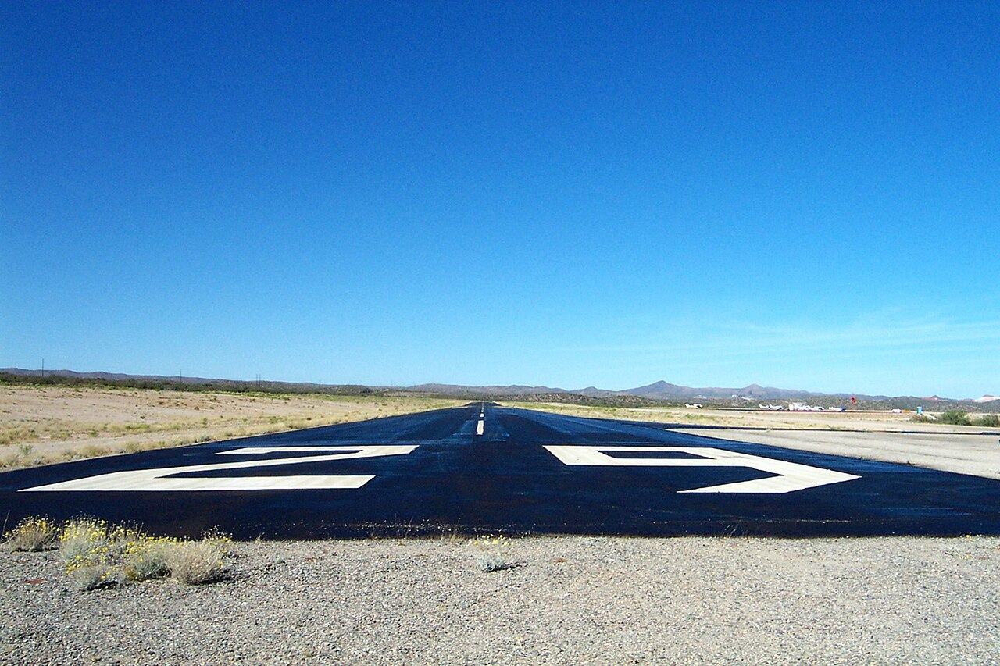

為什麼機場要花幾十萬，替跑道改名字？
漆在跑道上的數字不是地址，而是指南針讀數。當地核深處的鐵鎳流動推著磁北極漂移，跑道磁方位一旦跨過四捨五入的界線，機場就得重漆地上的數字：桃園機場的南跑道，已經改過一次。
搭飛機時如果坐在靠窗的位置，起飛前常能看到跑道入口漆著巨大的白色數字：05、23、36。這些數字不是編號順序，也不是施工代號，而是一個指南針讀數：它告訴飛行員這條跑道指向哪裡。奇特的是，這個讀數會過期。過去二十年間，從阿拉斯加到英吉利海峽，好幾座機場陸續關閉跑道好幾個夜晚，只為把地上的數字改掉。罪魁禍首不在機場，而在地下將近三千公里深的地方。

一、數字就是方向
根據美國聯邦航空總署（FAA）的航空資訊手冊，跑道編號的規則只有一條：取跑道中心線的磁方位角（從磁北順時針量），四捨五入到最接近的十度，再去掉最後一個零。[1]朝向磁方位 054 度的跑道就叫 05，朝向 264 度的就叫 26。因為飛機可以從兩端進場，一條實體跑道永遠有兩個名字，而且兩端的數字必然相差 18（也就是 180 度）：05 的對面永遠是 23，18 的對面永遠是 36。
如果機場有平行跑道，就加上字母：兩條平行跑道標 L 與 R（左與右），三條再加 C（中間）。所以倫敦希斯洛的 09L 與 09R 是同一方向上的左右兩條。這套編碼讓飛行員在無線電裡聽到「兩三右」就能在腦中展開機場圖，起飛前還能用跑道方向交叉核對機上的航向儀：指著 26 跑道，羅盤就該接近 260 度。
二、為什麼是磁北，不是真北
跑道為什麼不直接對準地理北極？因為駕駛艙裡最可靠的備援儀器仍然是一座磁羅盤。美國國家環境資訊中心（NCEI）的說明指出，航空業至今把磁羅盤當作主要導航儀器之一，與 GPS 並用；儀器進場程序、航管作業與跑道編號，全都建立在磁方位上。
問題是磁北極不等於地理北極，兩者之間的夾角叫做磁偏角，而且它不是常數。地球外核是液態的鐵與鎳，這些流動產生了約百分之九十五的地磁場，也讓磁北極持續漂移。根據 NCEI，過去幾十年磁北極一直朝西伯利亞方向移動，速度最快可達每年約四十英里。天上的飛機沒動，地上的跑道沒動，動的是整個參考系。
三、給地球校準的五年計畫
為了追蹤這場漂移，NCEI 與英國地質調查所每五年發布一次世界磁場模型（WMM）：它綜合衛星觀測與全球約 120 座地磁觀測站的資料，是 FAA、美國國防部與北約的標準導航工具，也藏在幾乎每支手機的地圖 app 裡。[2]FAA 的作業準則要求導航設施使用的磁差值必須貼近模型計算值，誤差控制在正負一度之內。
一度聽起來很小，但跑道編號的刻度是十度，所以漂移要累積到跨過五度的四捨五入界線才會觸發改名。NCEI 舉例：丹佛國際機場的 17L-35R 跑道目前磁方位是 172.5 度，等磁場再推大約四度、來到 176 度，它就得改叫 18L-36R；以當地磁偏角每年約 0.1 度的變化率估算，那是三十多年以後的事。離極區越近變化越快：阿拉斯加的費爾班克斯機場大約每二十四年就得改一次名。
四、改名的帳單
改名不只是重漆數字。長堤機場 2018 年的新聞稿記錄了完整流程：7R-25L 改為 8R-26L、7L-25R 改為 8L-26R，工程團隊連續五個夜晚趁跑道關閉時更新道面標線與電子標誌，時程還必須配合美國終端航圖的發布日期，確保飛行員手上的文件與地上的標誌同一天切換。[3]舊編號已使用至少六十六年，這次更名工程費約四萬五千美元，由 FAA 補助支付。堪薩斯的威契托機場同一年改掉三條跑道的名字，花費以數十萬美元計。
其他案例可以排成一張時間表：曼徹斯特 2009 年把 6L/24R 改成 5L/23R，奧克蘭 2013 年把 27 與 29 改成 28 與 30，費爾班克斯 2009 年把 1L-19R 改成 2L-20R 並預估 2033 年要再改一次。海峽群島的澤西機場 2014 年把用了六十二年的 09/27 改成 08/26，當時實測方位已是 084.38 度與 264.39 度；機場估計新名字可以再用五十六年。
為什麼不能將就？因為跑道編號是飛行員確認自己身在何處的最後一道交叉檢查。Wired 的報導指出，飛行員起飛前會用跑道方向驗證航向儀，混淆的代號會提高上錯跑道的風險：2006 年肯塔基州康姆航空 5191 號班機誤入較短的跑道起飛，衝出跑道盡頭，機上五十人中四十九人罹難。任何能降低這類錯誤的制度，航空業都不嫌麻煩。
五、桃園機場的 05L/23R
台灣自己的機場也活在這套規則裡。根據交通部飛航服務總台的說明，桃園機場的兩條跑道沿東北到西南方向興建，因為當地一年中風向多為東北風與西南風，而飛機需要逆風起降；北跑道磁方位 054/234 度，取名 05L/23R，南跑道磁方位相同，為避免混淆改標 05R/23L。[6]兩條實體跑道，四個名字，塔台依當時地面風決定使用哪一個。
而且桃園機場已經歷過一次改名。國家運輸安全調查委員會的改善建議紀錄中，民航局函文明載「桃園機場 06/24 跑道已改名為 05R/23L 跑道」[7]；2011 年九月的報導已在使用「5 號右跑道」的新編號[9]，交通部 102 年年鑑也以新編號記載整建計畫，但這些資料未交代確切更名日期。換句話說，跑道上的 06 悄悄變成了 05：數字少了一號，正是磁方位讀數跨過四捨五入界線時規則所要求的變化；公開公文記錄了更名本身，沒有說明原因。
未來呢？台灣位處中低緯度，磁場變化比高緯度機場緩慢，這次查閱的公開資料沒有桃園機場下次更名的預估時程。可以確定的是：只要外核的鐵鎳繼續流動，054 這個讀數就還在緩慢移動；哪一天它跨過五度的界線，地上的白漆就得再刷一次。
六、會過期的名字
跑道大概是地面上看起來最永久的東西：幾千噸的混凝土與瀝青，壽命以數十年計。但它的名字卻由地下三千公里外的流體決定；Wired 的報導估計，任何一年裡大概都至少有一兩座機場的磁方位跨過界線，得拿出白漆替跑道重取名字。
這是所有標準的隱藏成本：當你把人造的標籤釘在自然系統上，就得跟著自然系統的節奏更新。地圖的磁差要五年校準一次，航圖要定期改版，跑道的數字要重漆。我們以為名字是固定的，其實每一個名字底下都寫著一個到期日。
查證資料來源9 項
實際支持文中事實主張的來源，逐條標註支持的內容；文內如有 [數字] 標記，對應此處編號。
- Aeronautical Information Manual, Chapter 2 Section 3: Airport Marking Aids and Signs（FAA） ↗
- Airport Runway Names Shift with Magnetic Field（NOAA NCEI，2017） ↗
- Long Beach Airport Completes Runway Redesignation（長堤市政府新聞稿，2018） ↗
- Jersey airport runway re-named as magnetic pole shifts（BBC News，2014） ↗
- Why Airports Rename Runways When the Magnetic Poles Move（Wired，2018） ↗
- 桃園機場的主跑道是4條還是2條？（交通部飛航服務總台 FAQ，2024 年更新） ↗
- 國家運輸安全調查委員會改善建議 ASC-ASR-12-03-006 回覆往來紀錄 ↗
- 桃園國際機場股份有限公司營運概述：機場建設（交通部 102 年年鑑） ↗
- 桃機進入黑暗期 單道起降影響班機（TVBS，2011-09-09） ↗
延伸探討
把故事帶回自己的思考
下次在桃園機場的窗邊看到跑道盡頭的 05L 或 23R，可以想到：那不是門牌號碼，而是依跑道磁方位編出的數字。跑道沒有移動，地球磁場的變化卻可能讓它需要改名。生活裡還有哪些看似永久、其實會悄悄過期的標籤？